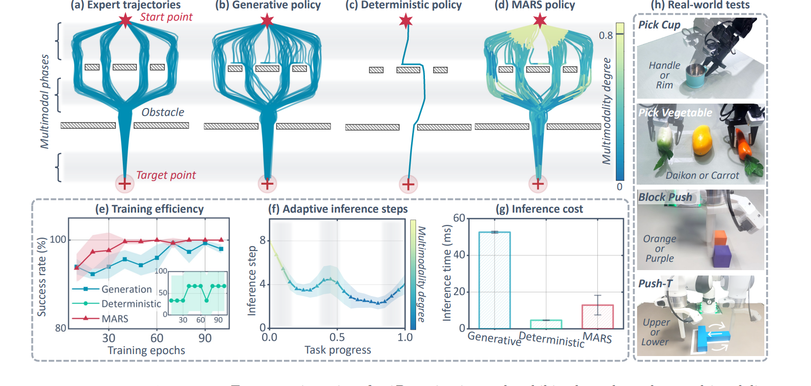
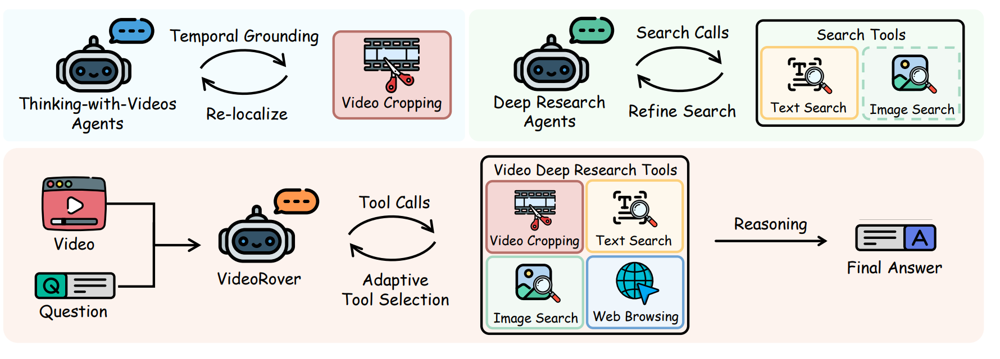

2026 — Present
Nanyang Technological University
PhD Student
Advised by Prof. Jianfei Yang. Research direction: multimodal learning, MLLM Agents, and embodied intelligence.
PhD Student · Multimodal AI · Embodied Intelligence
I build multimodal foundation models and agents that connect perception, reasoning, world modeling, and action.
InterLV-Search, ECL-Bench, and RynnVLA-002 accepted to NeurIPS 2026.
Our World Model for Robot Learning survey accepted to IJRR.
I am a PhD student at Nanyang Technological University (NTU), advised by Prof. Jianfei Yang. My research focuses on multimodal foundation models and agents for embodied intelligence, particularly embodied reasoning, vision-language-action models, world models, and robot learning.
I received my B.Eng. in Computer Science from Taishan College at Shandong University, where I worked with Prof. Xuemeng Song, and I have been a research assistant at the Intelligent Media Research Center (iLearn), led by Prof. Liqiang Nie. I am also a research intern at Alibaba DAMO Academy, developing open embodied models and systems.
Academic training and degree programs.
PhD Student
Advised by Prof. Jianfei Yang. Research direction: multimodal learning, MLLM Agents, and embodied intelligence.

B.Eng. in Computer Science and Technology
Taishan College, First-Honor Program. GPA: 88.5 / 100; Rank: 5 / 22.
Research appointments and internships.


Research Assistant · Multimodal Large Language Models and Information Retrieval
Supervisors: Prof. Xuemeng Song and Prof. Liqiang Nie.
* Equal or core contribution, as specified by each paper.
Showing 15 of 15 works

* Bohan Hou and Jiuning Gu contributed equally.
A benchmark for interleaved language-vision agentic search with active visual evidence seeking and open-web multimodal search.
* Minghao Zhu, Zhikai Wang, Ronghao Dang, and Bohan Hou contributed equally.
ECL-Bench evaluates fine-grained spatial and temporal awareness in embodied brain models.

A unified autoregressive VLA and world model in which action generation and future-frame prediction improve one another for simulated and real-world robot manipulation.

A robotics-centered survey of world models for policy learning, planning, learned simulation, evaluation, and video generation.

A modality-adaptive robot policy that introduces stochasticity when action diversity is useful, while retaining efficient deterministic behavior during single-modal phases.

VideoRover unifies active video reasoning and deep research through iterative video cropping, multimodal search, and webpage browsing, with curated training trajectories and VideoRover-Bench.

A data-centric taxonomy that organizes embodied manipulation data into five complementary layers and connects their collection, alignment, and mixing strategies to embodied foundation models.

An embodied foundation-model family spanning 2B, 9B, and 122B-A10B scales, with stronger cognition and localization, native 3D grounding, contact-point prediction, and cross-embodiment VLA capabilities.

A general-purpose robotic value foundation model that learns temporal distance from 7,000+ hours of heterogeneous data, turning time-to-completion into signals for progress estimation, failure detection, and VLA reinforcement learning.

An open embodied foundation model family for egocentric understanding, spatiotemporal localization, physical reasoning, and planning.

Fine-grained context learning for complex image retrieval with multimodal large language models.

Winner of the WWW’25 Multimodal Document Retrieval Challenge.

A pseudo-triplet guided scheme for improving few-shot composed image retrieval.

A unified image editing dataset, benchmark, and model for high-quality single-turn and multi-turn image editing.

A comprehensive survey of composed image retrieval, covering supervised, zero-shot, and related multimodal retrieval settings.
No papers match these filters.
A popular Chinese knowledge base and resource index for embodied intelligence, organized in an encyclopedia-style format. It covers robotics foundations, robot learning, simulators, benchmarks, datasets, multimodal models, VLA models, navigation, and related embodied-AI research directions.